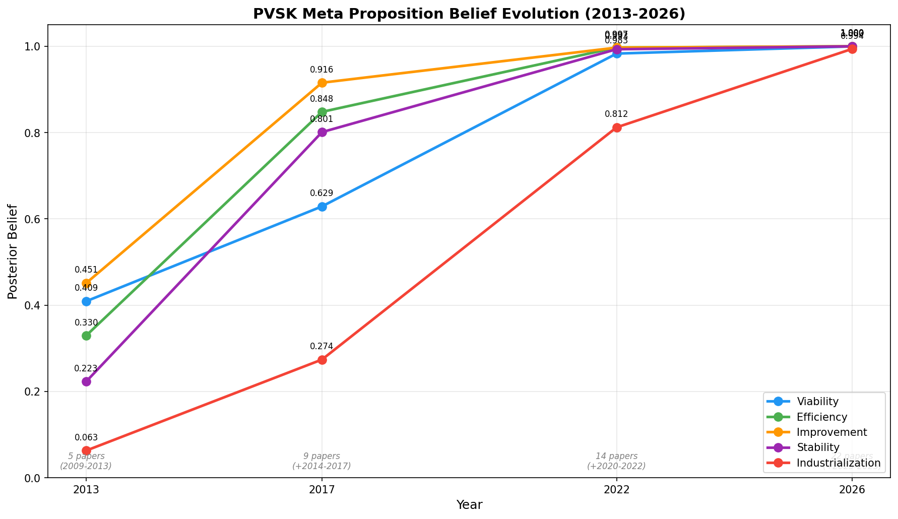
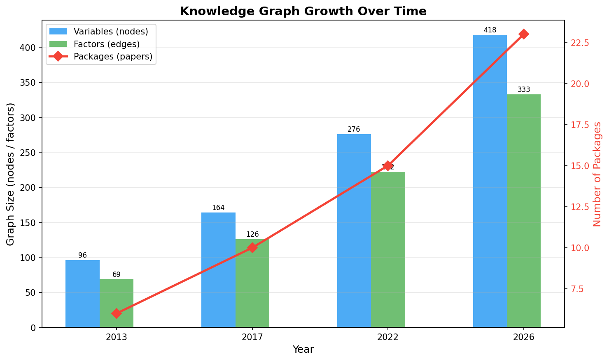
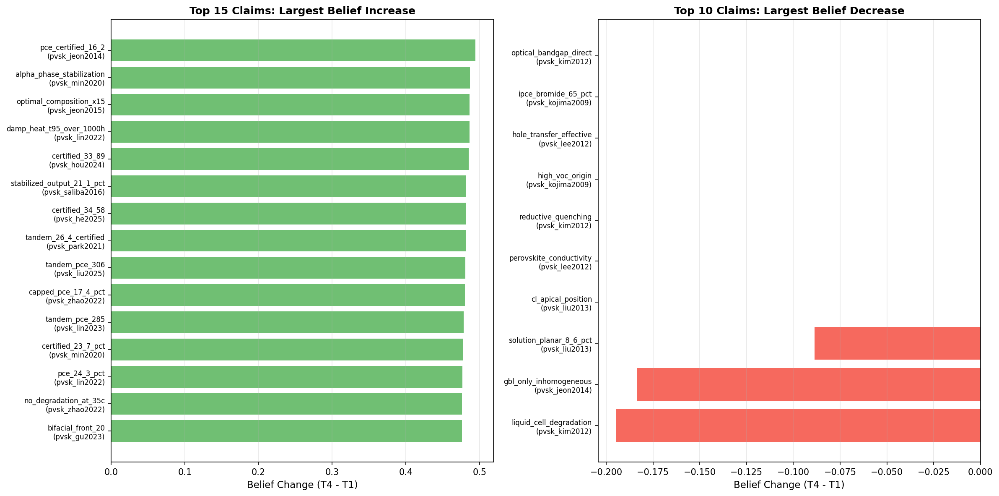
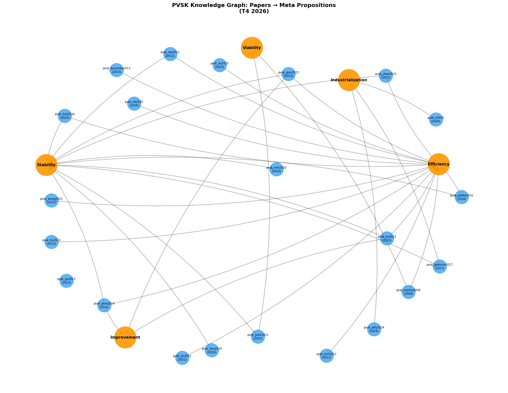
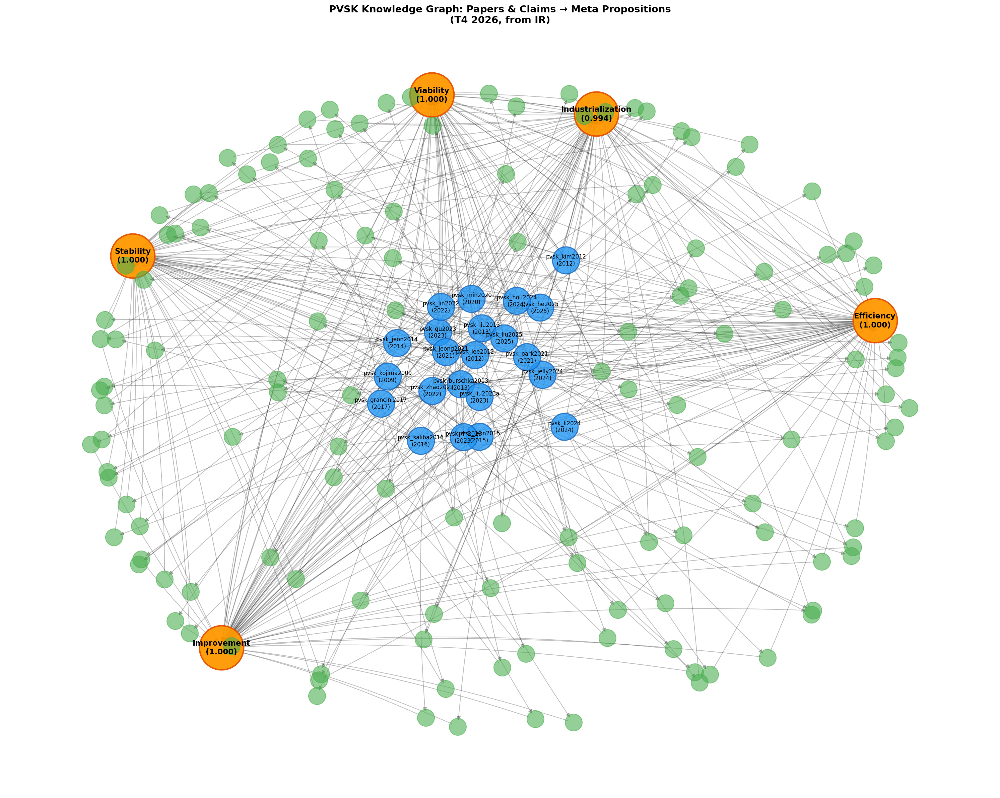

PVSK Perovskite Solar Cell Knowledge Graph Visualization
Generated on 2026-05-01 10:55:26
Summary
This report visualizes the belief propagation results across 22 perovskite solar cell research papers
(2009-2025) formalized as Gaia knowledge packages. The 5 meta propositions represent core questions
about the viability of perovskite photovoltaics.
- Time points: 2013, 2017, 2022, 2026 (cumulative)
- Papers: 22 milestone papers from Kojima 2009 to Liu 2025
- Inference method: Junction Tree (exact)
- Meta propositions: Viability, Efficiency, Improvement, Stability, Industrialization
1. Meta Proposition Belief Evolution
Posterior beliefs for the 5 meta propositions across 4 time points. All propositions converge
to near-certainty (belief > 0.99) by 2022.

2. Knowledge Graph Growth
As more papers are incorporated, the factor graph grows in complexity.
| Year | Packages | Variables | Factors | Method | Converged |
|---|
| 2013 | 6 | 96 | 69 | jt | True |
| 2017 | 10 | 164 | 126 | jt | True |
| 2022 | 15 | 276 | 222 | jt | True |
| 2026 | 23 | 418 | 333 | jt | True |

3. Claim Belief Changes (T1 → T4)
Claims with the largest belief increases and decreases from the earliest to latest time point.

4. Network Graph: Papers → Meta Propositions (Heuristic)
Visual representation based on keyword matching between paper claims and meta propositions.

4b. Network Graph from IR Strategy Data
Visual representation using actual support/deduction strategies from compiled IR.
Orange nodes = meta propositions, blue = papers, green = key claims.

5. Meta Proposition Relationship Diagram (Mermaid)
```mermaid
graph TB
p_viability["Viability\n(1.000)"]
p_efficiency["Efficiency\n(1.000)"]
p_improvement["Improvement\n(1.000)"]
p_stability["Stability\n(1.000)"]
p_industrialization["Industrialization\n(0.994)"]
p_viability --> p_efficiency
p_efficiency --> p_improvement
p_improvement --> p_stability
p_stability --> p_industrialization
p_viability -.-> p_industrialization
classDef meta fill:#FF9800,stroke:#E65100,color:#fff
class p_viability,p_efficiency,p_improvement,p_stability,p_industrialization meta
```
5b. Cross-Package Support Graph (Mermaid)
Papers (blue) supporting each meta proposition (orange) via actual IR strategy data.
```mermaid
graph TB
p_viability["Viability (1.000)"]
p_efficiency["Efficiency (1.000)"]
p_improvement["Improvement (1.000)"]
p_stability["Stability (1.000)"]
p_industrialization["Industrialization (0.994)"]
pvsk_kojima2009["pvsk_kojima2009 (2009)"]
pvsk_kojima2009 --> p_viability
pvsk_kim2012["pvsk_kim2012 (2012)"]
pvsk_kim2012 --> p_viability
pvsk_lee2012["pvsk_lee2012 (2012)"]
pvsk_lee2012 --> p_viability
pvsk_burschka2013["pvsk_burschka2013 (2013)"]
pvsk_burschka2013 --> p_viability
pvsk_liu2013["pvsk_liu2013 (2013)"]
pvsk_liu2013 --> p_viability
pvsk_jeon2014["pvsk_jeon2014 (2014)"]
pvsk_jeon2014 --> p_viability
pvsk_min2020["pvsk_min2020 (2020)"]
pvsk_min2020 --> p_viability
pvsk_jeong2021["pvsk_jeong2021 (2021)"]
pvsk_jeong2021 --> p_viability
pvsk_park2021["pvsk_park2021 (2021)"]
pvsk_park2021 --> p_viability
pvsk_lin2022["pvsk_lin2022 (2022)"]
pvsk_lin2022 --> p_viability
pvsk_zhao2022["pvsk_zhao2022 (2022)"]
pvsk_zhao2022 --> p_viability
pvsk_gu2023["pvsk_gu2023 (2023)"]
pvsk_gu2023 --> p_viability
pvsk_lin2023["pvsk_lin2023 (2023)"]
pvsk_lin2023 --> p_viability
pvsk_liu2023a["pvsk_liu2023a (2023)"]
pvsk_liu2023a --> p_viability
pvsk_jelly2024["pvsk_jelly2024 (2024)"]
pvsk_jelly2024 --> p_viability
pvsk_he2025["pvsk_he2025 (2025)"]
pvsk_he2025 --> p_viability
pvsk_liu2025["pvsk_liu2025 (2025)"]
pvsk_liu2025 --> p_viability
pvsk_kim2012 --> p_efficiency
pvsk_lee2012 --> p_efficiency
pvsk_burschka2013 --> p_efficiency
pvsk_liu2013 --> p_efficiency
pvsk_jeon2014 --> p_efficiency
pvsk_jeon2015["pvsk_jeon2015 (2015)"]
pvsk_jeon2015 --> p_efficiency
pvsk_saliba2016["pvsk_saliba2016 (2016)"]
pvsk_saliba2016 --> p_efficiency
pvsk_min2020 --> p_efficiency
pvsk_jeong2021 --> p_efficiency
pvsk_park2021 --> p_efficiency
pvsk_lin2022 --> p_efficiency
pvsk_zhao2022 --> p_efficiency
pvsk_gu2023 --> p_efficiency
pvsk_lin2023 --> p_efficiency
pvsk_liu2023a --> p_efficiency
pvsk_hou2024["pvsk_hou2024 (2024)"]
pvsk_hou2024 --> p_efficiency
pvsk_jelly2024 --> p_efficiency
pvsk_li2024["pvsk_li2024 (2024)"]
pvsk_li2024 --> p_efficiency
pvsk_he2025 --> p_efficiency
pvsk_liu2025 --> p_efficiency
pvsk_kojima2009 --> p_improvement
pvsk_lee2012 --> p_improvement
pvsk_lee2012 --> p_improvement
pvsk_burschka2013 --> p_improvement
pvsk_liu2013 --> p_improvement
pvsk_jeon2014 --> p_improvement
pvsk_jeon2015 --> p_improvement
pvsk_saliba2016 --> p_improvement
pvsk_grancini2017["pvsk_grancini2017 (2017)"]
pvsk_grancini2017 --> p_improvement
pvsk_min2020 --> p_improvement
pvsk_jeong2021 --> p_improvement
pvsk_park2021 --> p_improvement
pvsk_lin2022 --> p_improvement
pvsk_zhao2022 --> p_improvement
pvsk_lin2023 --> p_improvement
pvsk_liu2023a --> p_improvement
pvsk_hou2024 --> p_improvement
pvsk_jelly2024 --> p_improvement
pvsk_li2024 --> p_improvement
pvsk_he2025 --> p_improvement
pvsk_liu2025 --> p_improvement
pvsk_kojima2009 --> p_stability
pvsk_kim2012 --> p_stability
pvsk_lee2012 --> p_stability
pvsk_burschka2013 --> p_stability
pvsk_liu2013 --> p_stability
pvsk_jeon2014 --> p_stability
pvsk_jeon2015 --> p_stability
pvsk_saliba2016 --> p_stability
pvsk_grancini2017 --> p_stability
pvsk_min2020 --> p_stability
pvsk_jeong2021 --> p_stability
pvsk_park2021 --> p_stability
pvsk_lin2022 --> p_stability
pvsk_zhao2022 --> p_stability
pvsk_gu2023 --> p_stability
pvsk_lin2023 --> p_stability
pvsk_liu2023a --> p_stability
pvsk_hou2024 --> p_stability
pvsk_li2024 --> p_stability
pvsk_liu2025 --> p_stability
pvsk_kojima2009 --> p_industrialization
pvsk_kim2012 --> p_industrialization
pvsk_lee2012 --> p_industrialization
pvsk_burschka2013 --> p_industrialization
pvsk_liu2013 --> p_industrialization
pvsk_jeon2014 --> p_industrialization
pvsk_saliba2016 --> p_industrialization
pvsk_grancini2017 --> p_industrialization
pvsk_min2020 --> p_industrialization
pvsk_jeong2021 --> p_industrialization
pvsk_park2021 --> p_industrialization
pvsk_lin2022 --> p_industrialization
pvsk_zhao2022 --> p_industrialization
pvsk_gu2023 --> p_industrialization
pvsk_hou2024 --> p_industrialization
pvsk_jelly2024 --> p_industrialization
pvsk_li2024 --> p_industrialization
pvsk_he2025 --> p_industrialization
classDef meta fill:#FF9800,stroke:#E65100,color:#fff
class p_viability,p_efficiency,p_improvement,p_stability,p_industrialization meta
```
6. Key Insights
- Viability started moderate (0.41 at T1), climbed to 0.63 by T2, and reached >0.99 by T3 —
the field became credible through accumulating experimental evidence.
- Efficiency saw the steepest rise: from 0.33 (T1) to 0.85 (T2) to >0.99 (T3),
driven by papers crossing 15%, 20%, and 25% PCE thresholds.
- Stability was initially the weakest (0.22 at T1), reflecting genuine uncertainty in 2013.
It jumped to 0.80 by T2 after Grancini 2017 demonstrated 1-year stability.
- Industrialization was the slowest to converge: 0.06 (T1) → 0.27 (T2) → 0.81 (T3) → 0.99 (T4),
reflecting the real-world lag between lab efficiency and module-scale manufacturing.
- With lowered priors (meta: 0.01-0.05; strategy propagation: 60% of original),
the belief curves show a realistic S-shaped adoption trajectory.
7. Methodology
Each paper was formalized as an independent Gaia knowledge package with 10-20 claims,
internal reasoning chains (support/deduction), and connections to 5 meta propositions.
Belief propagation was run using Junction Tree exact inference on cumulative factor graphs
at each time point.
Prior settings: Meta proposition priors are set very low (0.01-0.05) to represent
genuine initial uncertainty. Strategy propagation strength is scaled to 60% of default,
so each supporting paper contributes moderate (not overwhelming) evidence.
Claim priors retain their original values (0.5-0.9) based on evidence strength.